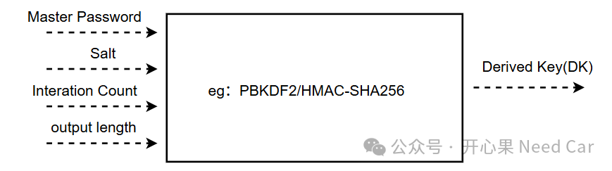

开心果 Need Car · 2025-12-01T06:23:00+08:00 · 微信原文
在公钥密码学应用中，用户的安全通常依赖于一个或多个秘密值（如：密码，Password）。注意，密码本身不能直接用作加密算法的密钥，因为：
密码通常来自一个很小的空间（比如常见单词），容易被暴力破解。这个在前文《密码和密钥，两码事》也有聊过。
还有，密码长度和格式不一定符合加密算法的要求。而本文则进一步讨论密码的使用和其衍生问题（比如：伪随机函数）。
1、如何安全的使用Password呢？
为了安全地使用密码，需要进行特殊处理（key derivation），而处理的方法主要讨论如下两种。
（一）密码 + 盐（salt）
盐（salt）：一个随机值，和密码一起用于生成密钥。使用盐的目的是增加搜索空间，防止预计算攻击（如彩虹表）。盐不需要保密，可以公开。即使攻击者知道盐，也必须针对每个盐单独尝试密码，增加攻击成本。如果密码空间太小，仍可能被暴力破解。
关于密码和盐的巧妙使用，可以参考前文《不直接存储Password本身的一种安全认证方案》。
（二）增加计算成本（迭代）
使用迭代计数（iteration count），重复执行某个函数（如哈希）多次。例如：迭代 10000 次哈希。对合法用户来说，计算延迟可以接受。对攻击者来说，暴力破解成本显著增加。
基于PBKDF2/HMAC-SHA256的密钥衍生方案如下所示：

PBKDF2（Password-Based Key Derivation Function 2）是一种基于密码的密钥派生函数，通过对密码进行多次哈希迭代并结合盐值（salt）来生成安全的密钥。
2、伪随机函数（PRF，Pseudorandom Function）
伪随机函数（PRF，Pseudorandom Function）是一类函数，它在外部看来像一个真正的随机函数，但实际上是由确定性算法生成的。
输入：一个密钥（secret key）和一个输入消息（input）。
输出：一个看似随机的值，但如果密钥相同、输入相同，输出也相同。
对没有密钥的攻击者来说，输出应与真正随机函数无法区分。如果一个函数是 PRF，那么它可以安全地替代真正的随机函数。
（一）常见实现
HMAC-SHA256：最常用的PRF实现。
AES-PRF：用 AES 分组密码构造 PRF。
往期精彩回顾